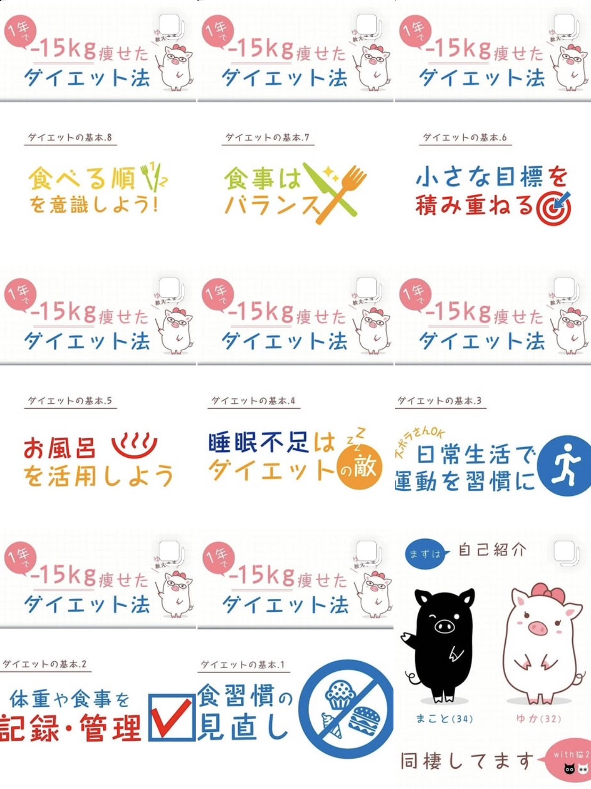

ご覧いただきありがとうございます。
奈良に暮らす、39歳のフリーランス、まことと申します。
これまで「言葉」を使った仕事を中心に活動してきましたが、現在はAIフルスタックエンジニアを目指して、新たな学びに取り組んでいます。
きっかけは、福祉分野での実体験。
制度や情報が複雑で届きにくい現状に対し、テクノロジーの力で誰かの「困った」を少しでも減らせたら——そんな想いから、コードを書き始めました。
現在はHTML/CSSを入り口に、Webアプリ開発やAIの基礎を少しずつ積み重ねています。
言葉を使った仕事と、これまでの経験これまでに、
など、言葉を通じた発信のサポートを行ってきました。 「その人らしさ」や「自然体の魅力」を丁寧に引き出し、伝えることを大切にしています。
実績としては、また、現在はライター業のアシスタント的な仕事を通じて、引き続き「伝える」ことの奥深さに触れています。
これからは、「ことば」と「テクノロジー」の両方の視点を活かし、福祉や教育などの分野で役に立てる存在を目指していきます。
OEM企画〜販売まで一貫対応。青ヒゲ対策用の男性向け抑毛クリームとして、Amazonで高評価を獲得しています。
手作りのぬくもりが伝わるよう、写真・余白・配色にこだわりました。

一緒に楽しく、ゆるく続けるヒントがここに！
 ▶ Instagramページを見る